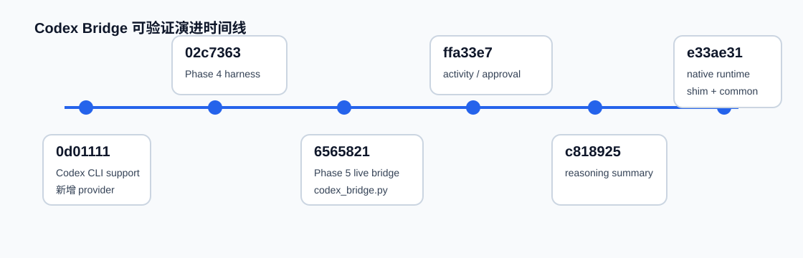

Codex Bridge 从 harness 到 native runtime
历史证据最完整的是 Codex bridge。当前 `codex_bridge.py` 很小，不代表设计简单；可验证历史显示主体从 Phase 5 独立 bridge 迁到了 `codex_app_server.py` 和公共 `JsonlAppServerRuntime`。
时间线

详细历史叙事
1. `0d01111` Codex CLI support
目标历史中 Codex 最早以 provider adapter 形态出现，`app/providers/codex.py` 新增大量实现。
2. `02c7363` Phase 4 harness
Codex adapter 被收敛成 opt-in harness，文档把 live execution 标为 Phase 5 范围。这里能证明“先有可发现/可路由 harness，再补 live bridge”。
3. `6565821` Phase 5 live bridge
新增 `app/providers/codex_bridge.py`，实现 `CodexAppServerClient` 和 `CodexHttpBridgeClient`，本地路径启动 Codex app-server，外部路径 POST `/execute`、`/compact`。
4. `ffa33e7` live activity controls
bridge 增加 operation event、pending interaction、respond/cancel，使运行过程不仅有最终回复，也有活动流和人工交互。
5. `c818925` reasoning summaries
增加 reasoning item 抽取和 summary delta 处理，解释当前页面为什么有 thinking/reasoning 字段。
6. `e33ae31` native provider runtime merge
这是当前结构的分水岭：新增 `provider_app_server.py`、`provider_execution.py`、`codex_app_server.py`；`codex_bridge.py` 变为 compatibility shim。
commit 证据
| commit | 可验证变化 | 当前影响 |
|---|---|---|
| `0d01111` | `app/providers/codex.py` 新增 991 行 | Codex 作为 provider 接入的早期阶段 |
| `02c7363` | 新增 `docs/CODEX_PROVIDER_ADAPTER.md`，adapter 收敛为 harness | live bridge 被明确推迟到 Phase 5 |
| `6565821` | 新增 `app/providers/codex_bridge.py` 414 行 | Codex live bridge 出现 |
| `ffa33e7` | bridge 增加 event_callback、allow_interaction、respond、cancel | 活动流与 approval 能力出现 |
| `c818925` | reasoning summary 处理增加 | thinking/reasoning 可视化 |
| `e33ae31` | 新增公共 runtime/result，`codex_bridge.py` 净删并成为 shim | 当前分层结构形成 |
不可验证声明
历史页不声称产品决策动机。`02c7363` 为什么收敛为 harness、`e33ae31` merge parent 的完整设计讨论、Codex app-server 外部规范版本，都无法仅从当前仓库 commit/diff 中验证。Hermes/Claude Code 与 native runtime 同批合入可由 commit stat 证明，但它们的完整演进不如 Codex 证据充分。